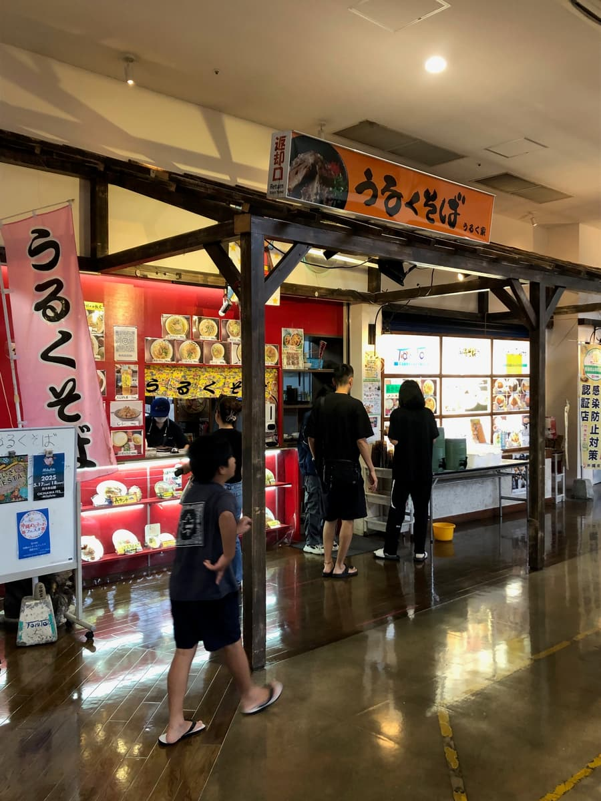
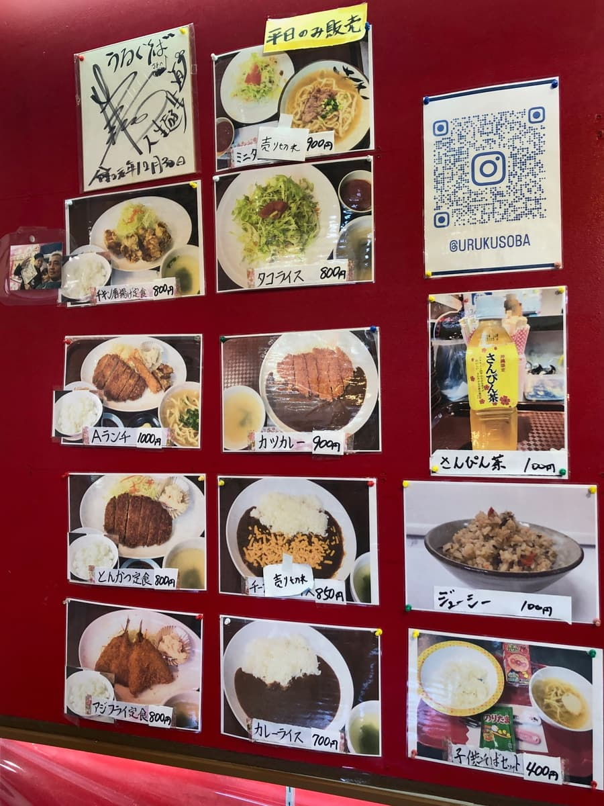
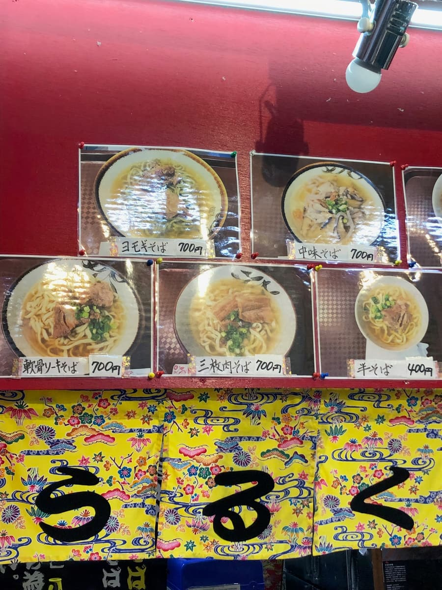
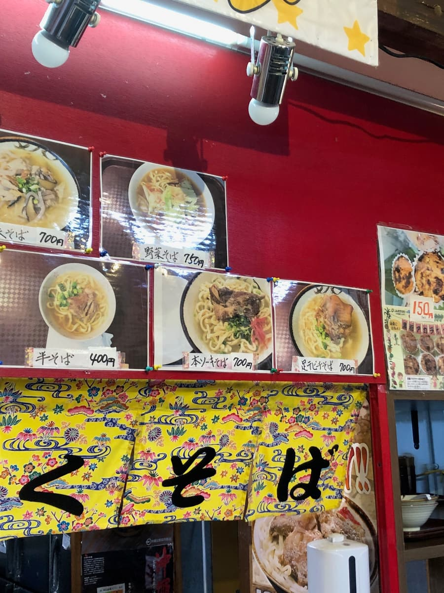
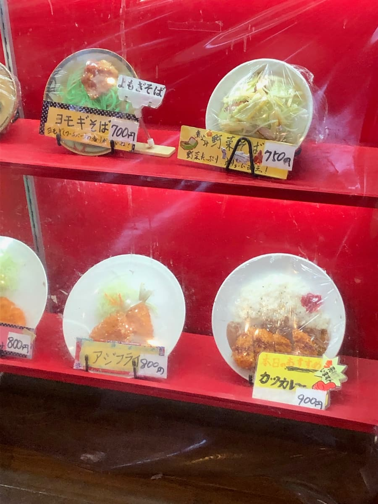
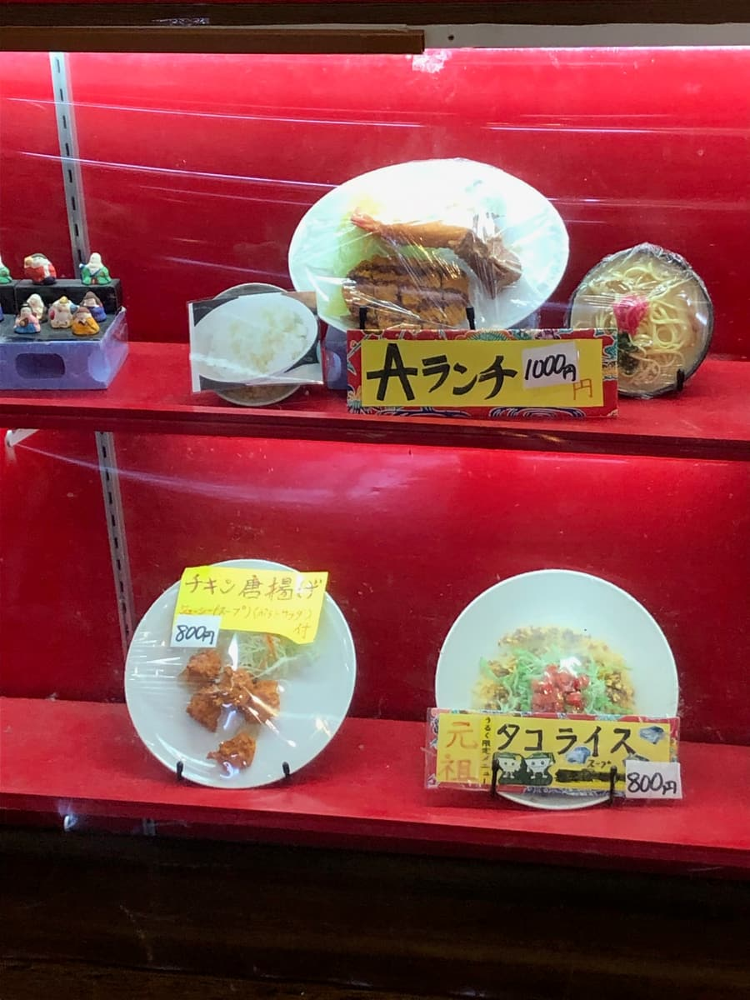
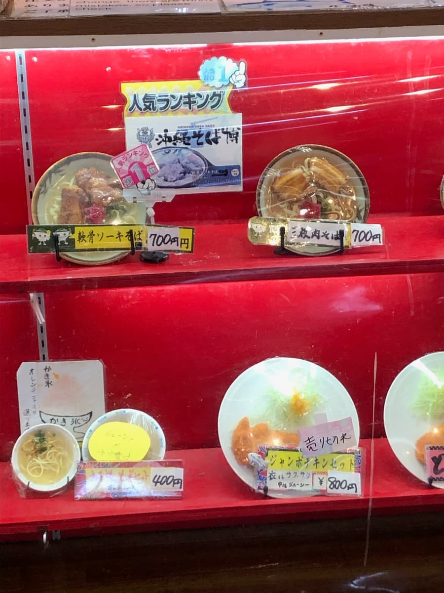
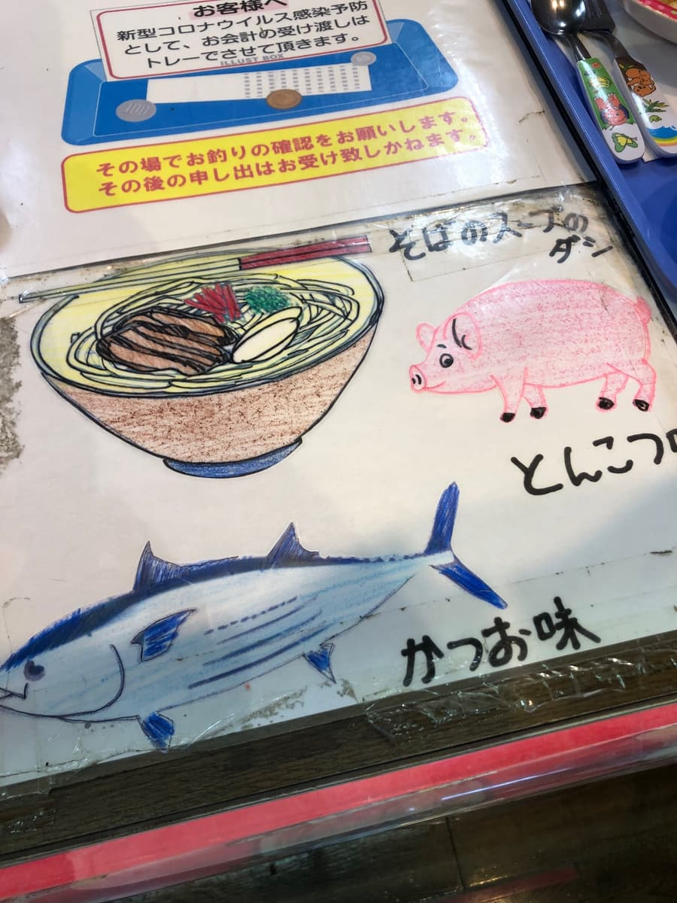
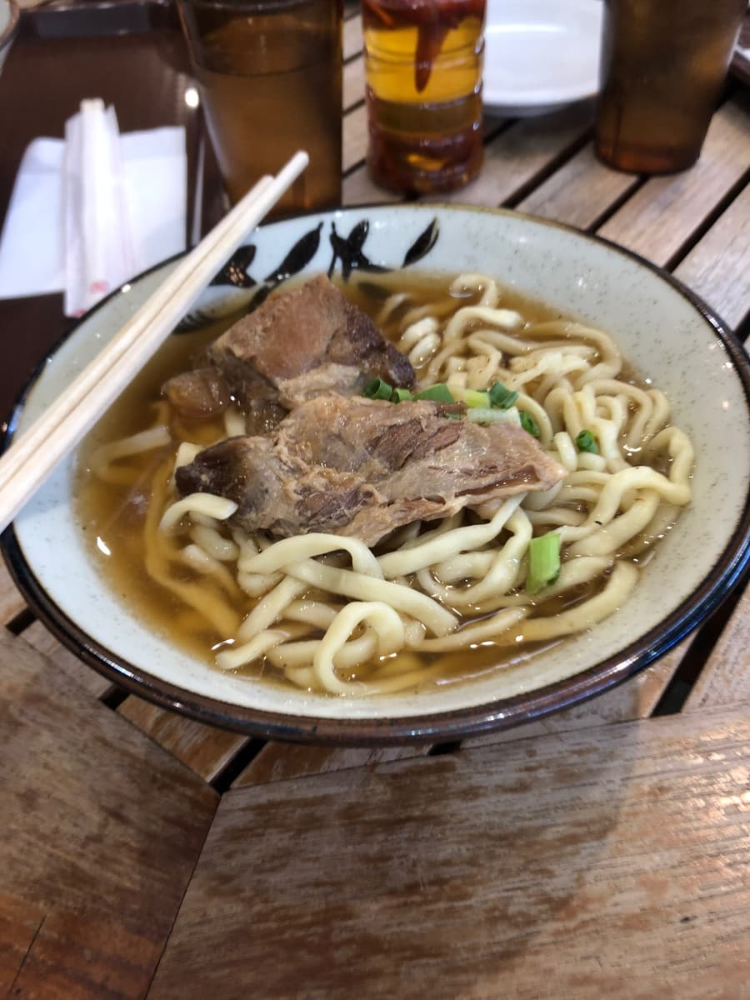
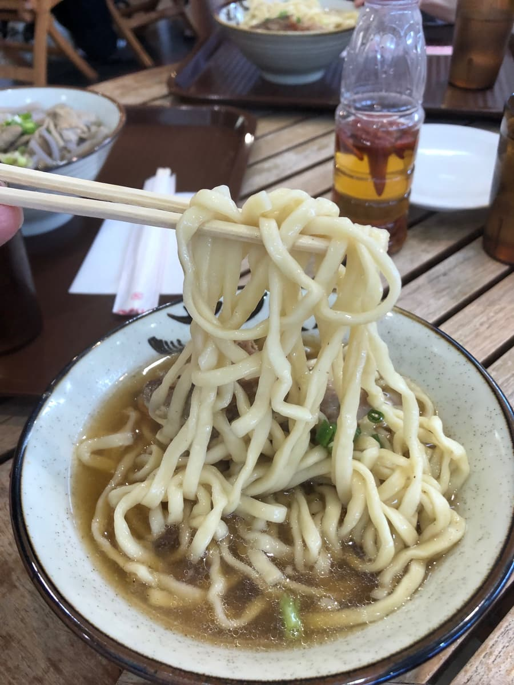

这次去了丰见城市丰崎TOMITON里的「うるくそば TOMITON分店」😊2025年4月吃的😆

因为在TOMITON里面，停车场也很大，是购物或出门时很方便顺道造访的店。







店门口整排摆着食物样品和菜单，不只冲绳面，还有定食、咖哩、塔可饭等，菜单相当丰富✨ 印象是带家人来也能各自点喜欢的东西，感觉很方便。
看了展示柜，被介绍为「人气排行第1名」的是软骨排骨面。难得来了，这次就点了人气菜单！
这间店的特色是汤头可以从猪骨味或柴鱼味中选择。这次因为我喜欢柴鱼高汤，毫不犹豫就选了柴鱼味😊

送来的软骨排骨面，是清澈的汤头上放了2块偏大的软骨排骨的简单一碗。首先从汤头开始喝，柴鱼高汤的味道比想像中还要明显。放进嘴里的瞬间柴鱼的香气扩散开来，虽然清爽，但能充分感受到高汤的存在感。

面是中粗的卷面。煮得偏软，是很有传统冲绳面风格的口感。与其说是享受嚼劲的类型，印象更像是能跟汤头一起顺口吃下的温柔面条。
然后主角的软骨排骨，偏甜的调味确实渗进去了。不是一下就散开的类型，也有些部分留有一点筋感，但一咬就能确实感受到猪肉的鲜味。因为是甜咸的调味，配白饭一起吃应该也很搭🍖
整体来看，是平衡很好的一碗，正常好吃😊
不过，老实说的感想是，「好吃是好吃，但应该还有其他更让人感动的冲绳面店吧〜」这是真心话😂
评分（9分/15分）：正常好吃。店内也很好进去，又是在购物中心内，能轻松利用是很大的魅力。购物回家或观光途中「想快速吃碗冲绳面」的时候，我觉得是刚刚好的一间店✨
面：★★★☆☆（3）
汤头：★★★☆☆（3）
配料：★★★☆☆（3）